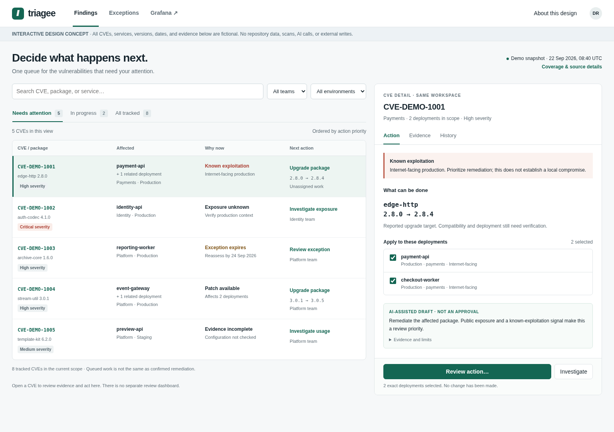

Implementation handoff · version 1.0 · 22 September 2026
One queue. One CVE detail.
Decisions backed by evidence.
Simplify Triagee into Findings and Exceptions, with Grafana for reporting. Preserve exact scope, authentication, frozen evidence, history, and durable ticket recovery.
13 core tasks58 acceptance checks7 specificationsExisting Phoenix stack
Give the agent IMPLEMENTATION_AGENT_PROMPT.md.
Read the precedence and prototype-gap notes first. This is a handoff, not an implemented application or a security certification.
Read the precedence and prototype-gap notes first. This is a handoff, not an implemented application or a security certification.
Start and assign
Design concepts
{kind=link}
{kind=link}
Specification
01 · Product scopeWhat to remove, merge, retain, and defer.02 · UX and designScreens, flows, states, responsive behavior.03 · Domain and safetyExact scope, evidence, chronology, priority.04 · Implementation planFour milestones and release gates.05 · AI assistanceOptional, evidence-bound drafts only.06 · Grafana contractShared snapshots, units, and drilldowns.07 · Migration and rolloutLegacy preservation and safe rollback.
Execution and review
Machine-readable task plan13 core tasks; one explicitly deferred task.Discovery promptVerify actual code before editing.Core implementation promptFindings, exceptions, and verification.AI/reporting promptImplement real optional boundaries.Independent review promptInspect actual behavior and evidence.Continuation promptResume without resetting or replanning.Delivery report templateExact results, blockers, and recovery notes.
Contracts and acceptance
Contract guideProposals, not existing API definitions.AI schemaStrict shape plus semantic validation.Reporting schemaOne scoped target at a snapshot.AI runtime promptUntrusted data and no-action instructions.58 acceptance checksReadable requirements; all initially NOT RUN.Synthetic fixturesDeterministic semantics, not a seed script.Package validationActual checks and known prototype defects.Repository source mapPinned evidence and verification limits.
Primary visual direction

Supplied concept, fictional data. The preserved prototype has known narrow-mobile overflow and mock-only behavior; see the gap list rather than copying those shortcuts.